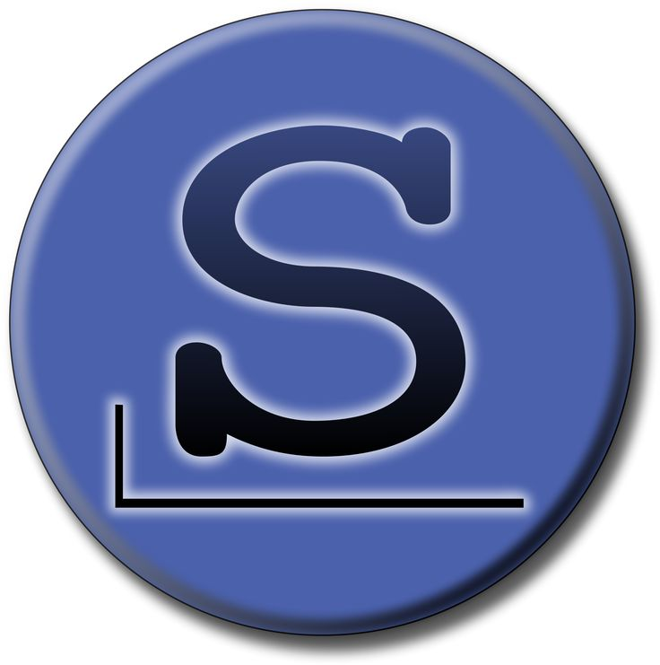

Slackware:
Junto ao Debian o Slackware também é bem antigo e bem mais difícil de usar, porque além de antigo
ele ainda abraça a filosofia Unix-Like, por isso ele é tão simples e com uma estabilidade alta.

Informações principais:
Gerenciador de pacotes: Ele não possui um gerenciador de pacotes modernos, mas ele usa pacotes em formato de
.tgz ou .txz e o principal gerenciador de pacotes é o pkgtool.
Filosofia: Ele segue a filosofia de simplicidade e estabilidade.
Modelo: Release tradicional.
Dificuldade: Avançado.
Vantagens:
1) Estabilidade e confiabilidade.
2) Controle total.
3) Leveza.
4) Unix-like puro.
5) Segurança.
Desvantagens:
1) Curva de aprendizado íngreme.
2) Falta de gerenciamento automático de dependências.
3) Software defasado.
4) Menos suporte da comunidade em relação ao Ubuntu/Debian.
5) Instalação mais manual.
E sim o site é bem antigo por isso ele usa HTTP.